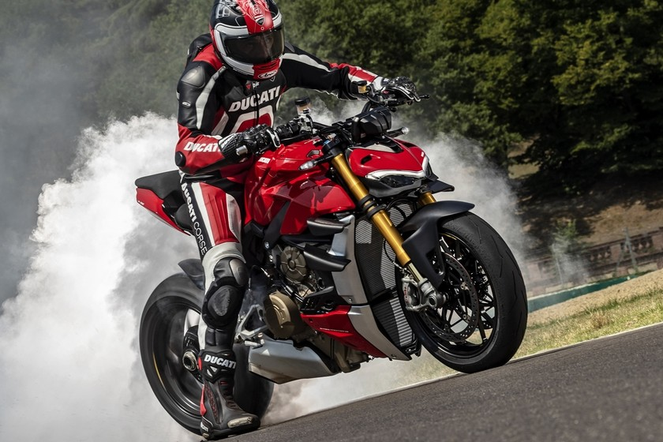
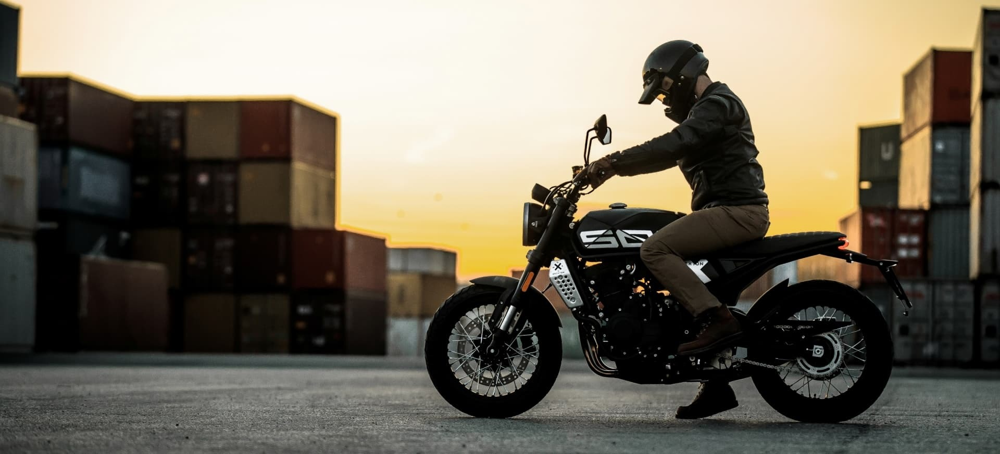
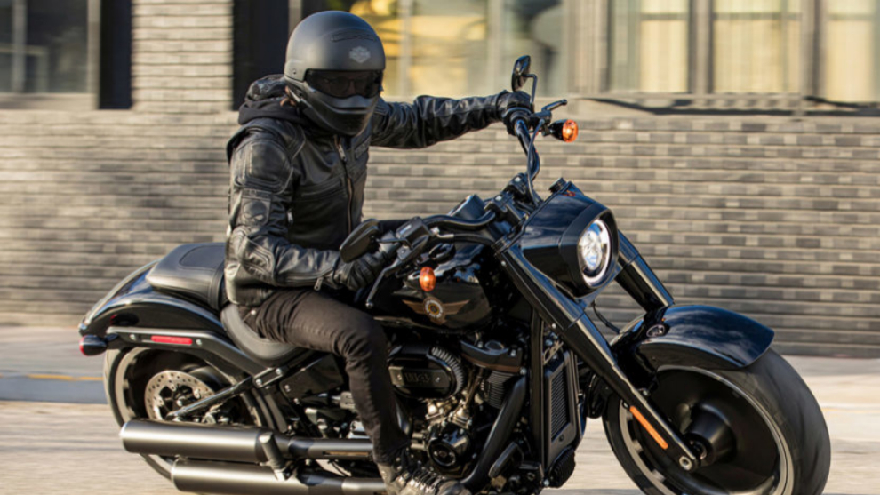

Yamaha
Yamaha
 Honda
Honda
 KTM
KTM

Ducati Motor Holding S.p.A. es una empresa italiana fabricante de motocicletas, fundada en 1926 en Bolonia por el ingeniero Antonio Cavalieri Ducati, Carlo Crespi y tres de sus hijos, pero no fue hasta 1952 cuando diseñaron su primera motocicleta. Actualmente se considera una de las marcas más importantes en el sector del motociclismo comercial y deportivo. Audi compró Ducati en abril de 2012.
En 1925 fue fundada como una sociedad fabricante de aparatos de radio y radiotécnica en general. En 1935 se traslada la producción a Borgo Panigale (cerca de la anterior fábrica de Bolonia) donde se construye una nueva y moderna factoría y con ésta, Ducati comenzará a expandirse en el mercado internacional. Durante la Segunda Guerra Mundial la planta de Borgo Panigale fue bombardeada y destruida; se pudo salvar la maquinaria y se reconstruyó la fábrica. En 1946, aprovechando que Siata (Società Italiana Applicazione Tecniche Auto-Aviatorie) había desarrollado un pequeño motor auxiliar de cuatro tiempos, perfecto para acoplar a las bicicletas y conocido como "Cucciolo" (cachorro de perro), de 48 cc (39 x 40 mm) que rendía 1 CV a 4500 rpm y tenía un bajo consumo, Ducati llega a un acuerdo con Siata para compartir la producción. Con él Ducati adquiere experiencia en el sector mecánico.
| Inicio
| Yamaha
| Harley-Davidson
| Honda
| KTM
|